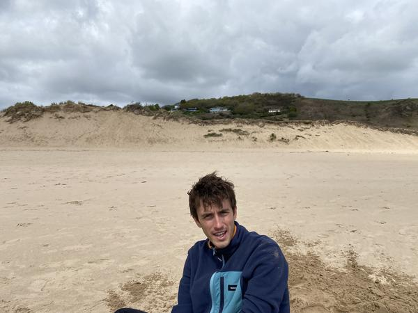

About me
I currently work at XTX Markets as a silicon engineer. Between 2016 and 2023, I worked at the UK-based chip company Graphcore, where I was involved in many aspects of the design and implementation of their AI accelerator. Prior to Graphcore, I have worked as a software engineer specialising in the compiler toolchain at XMOS for their embedded parallel processors, and as a technical consultant at Red Oak Consulting in Cheltenham, who specialise in services for high-performance computing.
I completed a PhD at the University of Bristol in the Department of Computer Science in 2014, with a thesis entitled Scalable abstractions for general-purpose parallel computation, which investigated the relationship between the hardware implementation of highly-parallel computers and programming languages and software for them. I hold a masters degree in Computer Science from the same institution.
Since it’s inception in 2015, I helped to found and run The CHEESE Project, a not-for-profit enterprise that uses thermal imaging to encourage people to reduce their domestic energy losses. For those who struggle to heat their homes, it improves their health and well being and for those who have thermally-inefficient homes, it saves them money and reduces their carbon emissions. As part of the expansion of CHEESE nationwide, I have helped to found First Thermal, a social franchise to replicate the approach.
There are some more CV-related details on LinkedIn.
About this website
My intention with this website is to provide somewhere for me to archive my old academic work, and a way to publish notes on topics that interest me and details of projects that I’ve undertaken in my spare time. These notes are written primarily as a record for myself, but they are publicly available in the hope they will be useful to others. I’d love to hear from you if that’s the case.
This website is built using Pelican, a static website generator written in Python. The theme is simply derived from Bootstrap and it is hosted on GitHub Pages. The source code is available for reuse.
Related links
You can find me elsewhere on the internet:
If you’d like to get in touch, then please email me at mail @ this domain.